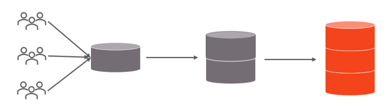
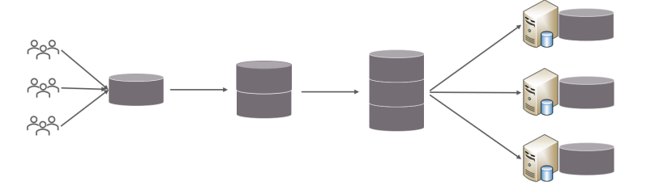
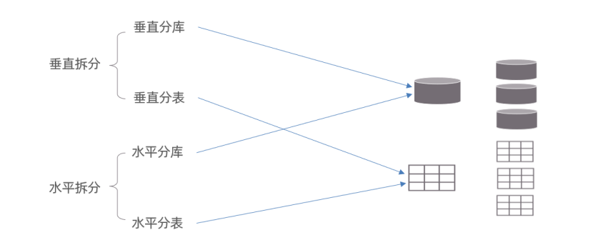
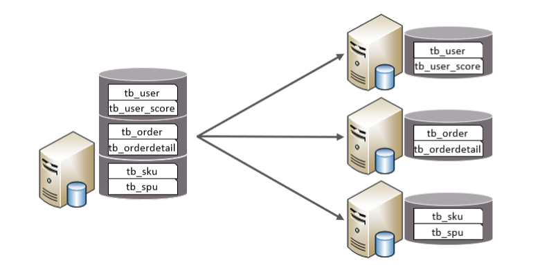
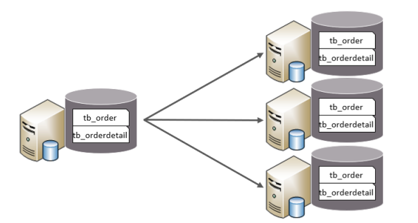
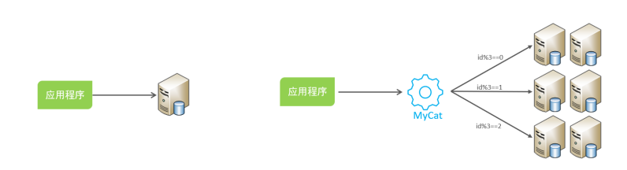

03分库分表
单库撑不住的时候，把数据切开存。这一页只解决判断：什么时候该拆、四种拆法到底差在哪、拆完会多出哪些麻烦。真动手配 MyCat 在 03-01。
一屏速记合上笔记，这 4 条要能自己说出来
- 两个问题分清四种拆法：切的是列还是行（垂直 / 水平），切完放不同的库还是同一个库（分库 / 分表）。
- 垂直切结构，水平切数据。垂直拆完每份结构不同、合起来是全量；水平拆完每份结构相同、合起来也是全量。
- 分表不解决单机瓶颈。十张表还在同一块磁盘上，IO 和 CPU 一点没多——只解决单表太大（索引变浅、DDL 和备份变快）。要加机器必须是分库。
- 拆完一定多出四件事：跨库 JOIN、分布式事务、全局唯一 ID、跨分片分页聚合。单库时这四件都是免费的。
1. 单库卡在哪
数据量涨上来，单库的瓶颈只有两类：IO 和 CPU。它们都受同一件事限制——所有资源只按一台机器算。

| 瓶颈 | 怎么来的 | 先看什么指标 |
|---|---|---|
| 磁盘 IO | 热点数据多于缓冲池，每次查询都落到磁盘；单表文件越大，索引越深，随机读越多。 | 缓冲池命中率、iostat 的 %util 与 await |
| 网络 IO | 返回的结果集太大、请求太密，网卡和带宽先到顶。 | sar -n DEV、单查询返回行数 |
| CPU | 排序、分组、多表连接、聚合统计都要算；并发一高，CPU 一直跑满。 | 慢查询里 Using filesort / Using temporary 的比例 |
分片的思路就是把这一台上限，变成 N 台之和：数据分散、请求分散、计算分散。

2. 先别急着拆
分片是所有手段里代价最大的一种：它把「数据库问题」变成了「应用架构问题」。在它之前，还有四件事可以做，而且都能回退。
| 先试 | 它解决什么 | 什么时候不够 |
|---|---|---|
| 加索引 / 改 SQL | 绝大多数「数据量大就慢」其实是执行计划问题：没走索引、回表太多、深分页。 | 索引已经最优，单次查询仍要扫上千万行 |
| 归档冷数据 | 订单只留最近 1~2 年，历史数据进归档表或归档库。热表立刻小一个量级。 | 业务确实要在线查全量历史 |
| 读写分离 | 读多写少时把查询摊到从库，主库只管写（见 02）。 | 写也多，或者单表大小本身成了问题 |
| 分区表 | 单机内按范围切成多个物理文件，SQL 基本不用改，还能按分区快速删历史。 | 还在同一台机器，磁盘和 CPU 没变多 |
业界常说的「单表 2000 万行」是个经验值，不是硬门槛——它取决于行宽、索引数量和查询模式。真正该看的信号是：加了正确索引、清了冷数据，单表仍在千万级且慢查询集中在这张表。到这一步再考虑拆。
3. 四种拆法
拆分只有两个维度：按什么切（列 / 行）、切完放哪（不同库 / 同一个库）。两两组合就是四种。

| 拆法 | 依据 | 拆完长什么样 | 解决什么 |
|---|---|---|---|
| 垂直分库 | 业务 | 用户库、订单库、商品库，每个库的表完全不同 | 单库表太多、单机扛不住全业务 |
| 垂直分表 | 字段 | 一张宽表拆成主表 + 扩展表，用主键关联 | 单行太大、大字段拖慢主表查询 |
| 水平分库 | 行 | 同一张表按规则分到多台机器，结构完全一样 | 单机容量和并发到顶（唯一能加机器的一种） |
| 水平分表 | 行 | 同一张表按规则拆成 tb_order_1/2/3，还在同一个库 | 单表太大、索引太深、DDL 太慢 |
4. 垂直：切列
垂直分库：按业务分家
把一张大而全的库，按业务拆成几个只装自己那摊表的库。它其实就是「微服务化」在数据层的做法。

代价立刻出现：原来一条 JOIN 能查出的「订单 + 用户名」，现在跨两个库。要么在应用里查两次再拼，要么把用户名冗余进订单表。
垂直分表：把冷字段挪走
一张表字段太多、某几个字段又大又少用（详情、富文本、图片地址），就把它们拆到扩展表。主表一行变短，同样一页能放更多行，查询更快。
判断依据只有两条：查得频不频繁、占不占空间。拆完两表用主键一对一关联，查详情时多一次按主键的查询——这是可以接受的代价。
这里按概念重画了一张。真正的垂直分表是一张表变成两张表（列被切开），不是把表分到三个库——分到三个库那是垂直分库。
5. 水平：切行
水平分库：数据上多台机器
同一张逻辑表，按某个字段的规则把不同的行放到不同机器上的同名表里。结构完全一样，单台只存一部分。

水平分表：同一个库里的多张表
行数太多但机器还撑得住时，先在一个库里把表切成 tb_order_1 / tb_order_2 / tb_order_3。表名带后缀，结构一致。
三张表还在同一个 MySQL 实例、同一块磁盘上。查询确实可能更快（索引层数变浅、单表缓存命中率更高），但并发上限和磁盘带宽一点没变。要扩容，必须把这几个表放到不同机器上——那就是水平分库。
真实系统里两者常一起用：先按业务垂直分库，订单库再按 user_id 水平分库，每个分片里再按时间水平分表。
6. 拆完多出四件事
这四件事在单库时由数据库免费提供，拆完要自己实现。它们比「怎么拆」难得多。
| 问题 | 为什么会出现 | 常见解法 |
|---|---|---|
| 跨库 JOIN | 两张表的分片键不同，或者根本不在一个库，JOIN 没法下推。 | 冗余字段（订单表存 user_name）；按同一分片键切（关联表同分片，即 ER 分片）；应用里查两次再拼。中间件的「跨库 JOIN」是把各节点结果拉回内存合并，数据量大时非常慢。 |
| 分布式事务 | 一个事务写两个库，本地事务管不到另一个库。 | 最优解是设计上避开：让一个事务只落一个分片（比如同一用户的订单和明细同分片）。避不开才上本地消息表、TCC、Seata 这类方案。 |
| 全局唯一 ID | 每个分片各自自增，跨分片必然出现重复 ID。 | 雪花算法（趋势递增、含机器位）、号段模式（数据库或 Redis 批量发号）。UUID 唯一但无序，做 InnoDB 主键会造成大量页分裂。 |
| 分页与聚合 | LIMIT 100000,10 要每个分片各取 100010 条，再在中间件里排序取 10 条。 | 深分页改成「上次最大 id」的游标翻页；COUNT / SUM 由各分片算部分结果再汇总；报表类查询走单独的汇总库或数仓。 |
如果这四件事里有三件你现在的业务都要用，那说明这张表不适合按这个键拆。换分片键，或者先不拆。
7. 分片键怎么选
分片键（sharding key）决定了每一行去哪个分片，也决定了以后所有查询的成本。选错比不拆更糟。
- 覆盖最高频的查询条件
订单表 90% 的查询都带
user_id，就用user_id。分片键进了 WHERE，才能定位到一个分片；否则每次都是广播。「按订单号查」这类不带
user_id的查询会打到所有分片——要么接受，要么再建一张「订单号 → user_id」的索引表。 - 分布要均匀
性别、状态、地区这类字段取值少且倾斜，切完必然某个分片特别大。用
user_id、order_id这种高基数字段。 - 值不能变
分片键一改，这一行就要从一个分片搬到另一个分片——等于手工做一次数据迁移。用注册时间、创建时间这种天然不变的字段，别用等级、归属地这种会变的。
- 时间字段要小心
按
create_time分片，所有新数据都写进最后一个分片：范围查询很舒服（只查相关月份），但写入全压在一个节点上，成了热点。日志、流水这类「只按时间查、且能按月归档」的数据适合；订单这种要按用户查的不适合。
8. 用什么实现
分片逻辑总得有个地方执行：要么在应用里，要么在一个代理进程里。

id%3 路由到三组库，应用完全不知道背后有几台。| 方案 | 形态 | 特点 |
|---|---|---|
| ShardingSphere-JDBC 原 Sharding-JDBC | 客户端 jar | 嵌在应用里，拦截并改写 SQL，直连各分片。少一跳网络，性能最好；只支持 Java，要改数据源配置，升级时要跟着应用发版。 |
| ShardingSphere-Proxy | 独立进程 | 模拟 MySQL 协议，应用只改连接串。支持多语言，和 MyCat 是同一类东西，社区活跃，功能比 MyCat 全。 |
| MyCat | 独立进程 | 同样是代理，配置全在 XML，学习成本低、课程用它演示最直观。1.6 系列多年没有实质更新，MyCat2 是重写版、与 1.x 配置不兼容；新项目一般选 ShardingSphere。 |
一句话选型：Java 应用、在意性能 → JDBC；多语言或不想动代码 → Proxy；只为理解原理 → 先按 03-01 把 MyCat 跑通。
9. 一次判断的顺序
真到要拆的时候，按这个顺序问自己五个问题，别跳步：
- 量到底多大
SELECT table_rows, ROUND(data_length/1024/1024) AS data_mb, ROUND(index_length/1024/1024) AS index_mb FROM information_schema.TABLES WHERE table_schema = 'db01' AND table_name = 'tb_order';table_rows是 InnoDB 的估算值，看量级够用；要准确行数还是SELECT COUNT(*)。真正该看的是data_mb和慢查询是否都集中在这张表——只有「行多」不构成理由，行宽、索引、查询模式都得看。 - 不拆能不能扛
按第 2 节过一遍：索引、归档、读写分离、分区表。这些做完还有明显瓶颈，再往下走。
- 切列还是切行
宽表、大字段、单行几 KB → 先垂直分表。行数上千万、单表文件几十 GB → 水平。
- 切完的查询还走不走得通
把线上 Top 20 的 SQL 列出来，看分片键能覆盖几条。覆盖不到一半，说明这个键选错了，回到第 3 步。
- 怎么上线
拆完不是改个配置就完事，数据要迁过去，而且不能停业务。步骤见下面的折叠。
平滑迁移的四步（不停机）
① 双写：应用同时写旧库和新库，新库先不读。
② 迁移存量：按分片键分批把老数据搬过去，一边搬一边比对行数和抽样内容。
③ 切读：灰度让一部分读走新库，观察一段时间；对不上就切回来。
④ 切写、下线旧库：写全部切到新库后，旧库保留只读一段时间再下线。备份别急着删。
整个过程最容易被忽略的是增量：迁移跑的几个小时里业务还在写，双写就是为了把这部分补上；只做一次性 dump 一定会丢数据。
下一步
概念清楚之后，用 MyCat 把三台 MySQL 拼成一个逻辑库，看看分片规则怎么落到具体节点、SQL 怎么被路由：
自测三问先自己答，再展开对照
Q1单表 1 亿行，水平分成 10 张各 1000 万，还放在同一个 MySQL 实例里，性能会明显提升吗？
不会明显提升，磁盘 IO 和 CPU 还是那一台机器的。收益只在「单表变小」这一侧：索引层数变浅、单表 DDL 和备份更快、缓冲池对单表的命中率更高。
要真正扩容，必须把这 10 张表分到不同机器上（水平分库），或者先用读写分离把读压力分出去。
Q2用户表和订单表都按 user_id 分片，能保证它们之间的 JOIN 不跨库吗？
能，前提是同一个分片键 + 同一套分片算法：同一个用户的订单和用户资料落在同一个节点，JOIN 可以下推。
但「按订单号查订单」这种不带 user_id 的查询仍然会广播到所有节点——分片键保护的是它自己那一类查询。
Q3为什么不能靠「每个分片自增步长不同」（1、3、5…）来解决全局 ID？
扩缩容时会崩：从 3 个分片加到 4 个，步长要重算，已有数据的 ID 序列全乱，新老数据可能撞号。
而且步长方案要求分片数固定，和「随时能加机器」这件事直接冲突。用雪花算法或号段发号，把 ID 生成从数据库里拿出来。
资料
官方与文档：ShardingSphere 概览 · MySQL 分区表 · MyCat 官网 · InnoDB 索引结构
核对日期 2026-11-26。本页是概念与判断，命令只用于观察指标，没有在真实分片集群上执行；MyCat 的具体配置与验证步骤在 03-01。